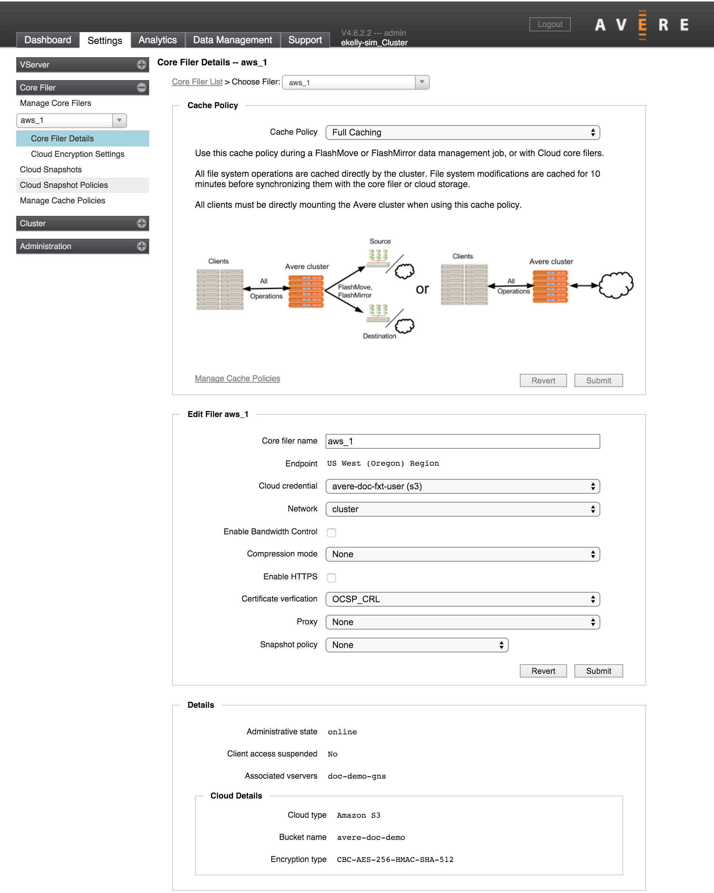
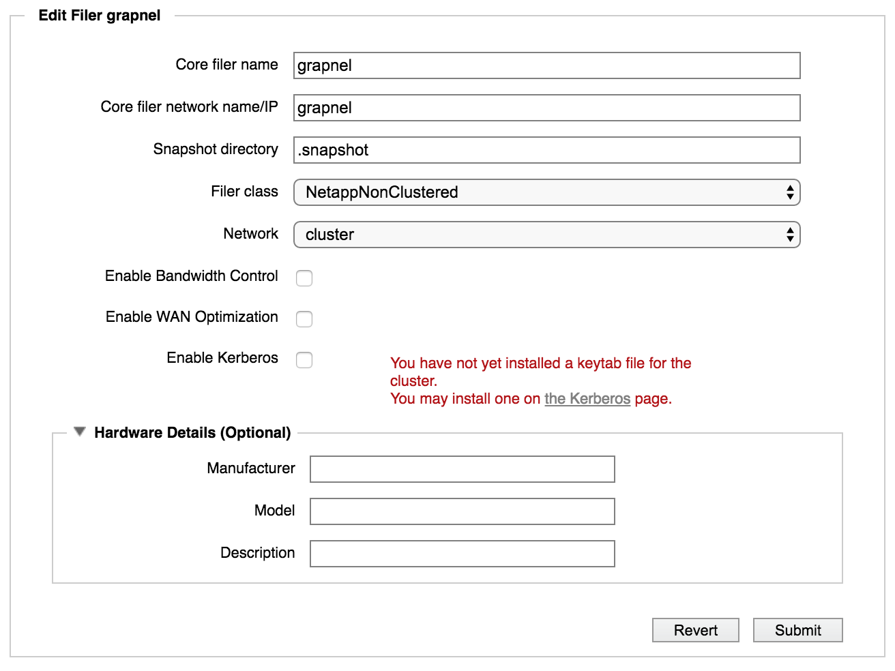

Core Filer > Core Filer Details
{kind=link}
The Core Filer Details page shows information about one core filer and gives you options to change settings, including cache policy, core filer name, security settings, and other attributes.
To use these settings, first select the core filer to see by using the drop-down selector at the top of the page or in the menu sidebar. You also can load this page by clicking a core filer name in the Manage Core Filers page. (The Core Filer List link at the top of the page is a quick link back to the Manage Core Filers page.)
The page is customized for the core filer being displayed; different edit options are available for hardware core filers (NAS) and for cloud core filers.
Cache Policy Settings

The Cache Policy panel shows details about the core filer’s caching configuration and allows you to change to a different policy.
The system comes with several predefined cache policies. You can create customized cache policies as well - read Manage Cache Policies to learn more about customizing cache settings.
If the selected core filer uses a predefined cache policy, this panel includes a detailed description of the policy and when and how to use it. For custom policies, the display shows the settings included and displays any text stored in the Cache Policy Notes field.
The drop-down selector (1) lets you change the cache policy setting for this core filer.
Note
For cloud filers, only Full Caching or a custom policy can be selected. Custom cache policies must include Local Directories support and cache both reads and writes in order to be applicable to cloud core filers.
A link to the Manage Cache Policies page is given at the bottom of the panel (2) for quick access to customize or create a policy.
If you change the cache policy, click the Submit button (3) to save your changes, or Revert to abandon the modifications. When changing among system cache policies, you might see a warning about other steps that must be taken, or about possible service interruptions that will be caused by changing the policy. For example, changing a policy could cause cluster unavailability while data is moved. All NFS clients that access the cluster might need to remount, and SMB clients might need to remap the cluster volume.
Edit Filer Settings
The Edit Filer panel lets you change settings on the core filer.
The settings displayed here depend on the kind of core filer selected, since cloud core filers have different options than NAS core filers.
Common Settings
A few configurable settings are common to both types of core filers:
Core Filer Name - The visible name for the core filer.
Network - The network that the Avere cluster uses to communicate with the core filer. (If your cluster includes multiple networks, you can choose which network to use.)
Enable Bandwidth Control - Check this box to show additional settings for bandwidth management. These settings allow you to prevent the cluster from using all available bandwidth when writing data to back-end storage, and to force cached files to be written to the core filer earlier than necessary for load balancing. Read Controlling Write Bandwidth to learn more about customizing this behavior.
- Maximum Bandwidth - Choose the amount of bandwidth that can be used for writebacks to this core filer. You can specify a custom value in MB/sec - integer values between 1 and 800 are accepted.
- Early Writeback - Check this box to prompt more frequent writes to this core filer. Note: You must set a maximum bandwidth if you enable early writeback.
NAS Storage Settings
{kind=link}
In addition to the common settings described above, the Edit Filer panel includes these settings for NAS core filers.
Core filer network name/IP – You can change the information about the network name or IP address, if, for example, you have moved the core filer to a different network. As when you defined the core filer, use dot notation or a fully qualified domain name and separate multiple values with spaces. (A fully qualified domain name is necessary to support SMB ACLs and recommended for most other situations.)
Snapshot directory – Many NAS core filers provide a snapshot feature that creates periodic, read-only copies of the data stored. If this core filer supports snapshots, specify the name of the snapshot directory that it uses. This setting allows clients to access snapshot files through the Avere cluster. The default is .snapshot.
Note
Avere OS always treats snapshot directories as read-only, regardless of the core filer’s cache policy. Although the data represented in the snapshot might be cached on the Avere cluster, snapshot attributes are always read from back-end storage, which makes queries on snapshot directories slower than for typical directories.
Filer class - Choose the type of hardware that corresponds to the back-end storage system, or choose Other if the hardware type is not listed.
Note
Make sure that the Filer Class value is set correctly before enabling SMB access for this core filer.
Enable WAN Optimization – If the core filer is in a wide-area network (WAN) environment, select this option to optimize communication. Caution: This setting might degrade performance in a local-area network (LAN) environment.
Enable Kerberos – Select this option to enable Kerberos authentication. If you have not yet installed a keytab file, you can select this option, but you will need to access the Cluster > Kerberos settings page to install a keytab file.
Read Setting Up Kerberos Authentication to learn more about the settings necessary to configure Kerberos for cluster-core filer communication.
Hardware Details (Optional) – Information about the core filer’s hardware, if it has been entered. You can add hardware and configuration details about this core filer here.
Cloud Storage Settings

In addition to the common settings described above, the Edit Filer panel includes these settings for cloud core filers.
Cloud credential – Specifies which cloud credential the core filer is using. Use the drop-down list to choose from any other existing credentials. Cloud credentials are defined in Cluster > Cloud Credentials.
Compression mode – Optionally, choose a mode to enable file compression before storing data on the cloud core filer. Compression options are LZW, LZW4, or None.
Using compression allows you to save storage space on the cloud core filer, but it increases overhead when reading and writing files to the cloud. Encrypting and decrypting files requires processing time, which could slow write and read times when accessing the core filer.
Note
If you change compression modes, files are not reprocessed until the next time they are stored. That is, individual files will be compressed with the method that was in effect the last time they were written.
Enable HTTPS – Select this option if you want to use the HTTP over SSL web protocol to communicate with your cloud provider.
Note
If your cloud provider does not use the standard https port, 443, this option is disabled.
Certificate verification - Select how to validate the SSL certificates sent by this core filer. Options include:
- OCSP - Use the online certificate status protocol to validate certificates
- CRL - Use a certificate revocation list to validate certificates
- OCSP_CRL - Use OCRP first, and if it fails, use CRL
- DISABLED - Do not validate certificates. This option is useful for self-signed certificates or the case where you use a certificate type that cannot be validated through one of the available protocols.
Proxy - If the Avere cluster contacts this core filer through a proxy server, select its configuration here. Proxy configurations are defined on the Cluster > Proxy Configuration settings page.
Snapshot Policy - This drop-down menu allows you to choose a snapshot policy for a cloud core filer. Cloud snapshot policies are configured in the Cloud Snapshot Policies page (Core Filer > Cloud Snapshot Policies) before they can be selected on this page.
Hover your mouse pointer over the question mark help icon next to the drop-down selector to see details about the selected policy.